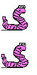
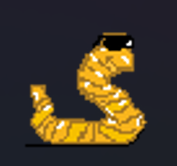

Bijdragen
Tijdens de ontwikkeling van het spel heb ik twee unieke wormen ontworpen, waar ik het meest trots op ben. Elke worm beschikt over unieke mechanics die zorgen voor een spannende gameplay-ervaring. De eerste worm kan zich snel verplaatsen en verrassingsaanvallen uitvoeren, terwijl de tweede worm is uitgerust met een krachtige minigun om vijanden te elimineren. Deze verschillende gameplay-elementen dragen bij aan de diversiteit van ons spel en garanderen dat spelers een unieke ervaring hebben, ongeacht welke worm ze kiezen.
Gorden is een van mijn meest trotse creaties, uitgerust met een krachtige minigun waarmee hij roofdieren effectief elimineert.
Ru Chong is een van mijn meest trotse creaties; hij kan vijf shurikens naar voren schieten, waarbij elke shuriken 1 schade aanricht aan vijanden.
Over Mij
Hallo! Mijn naam is Dennis en ik ben de Scrum Master van ons projectteam. In deze rol heb ik de verantwoordelijkheid om ons team te begeleiden bij het ontwikkelen van ons spel. Ik zorg voor een duidelijke planning en stel haalbare deadlines, zodat we als team gefocust blijven en onze doelen tijdig bereiken. Daarnaast ben ik ook backend developer, waar ik ondersteunende taken uitvoer om de ontwikkeling van ons spel te optimaliseren.
